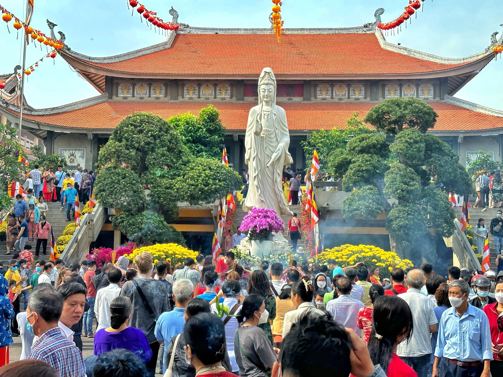

Du xuân và đi lễ chùa đầu năm là một nét đẹp tâm linh sâu sắc của người Việt mỗi độ Tết đến xuân về. Trong không khí se lạnh của những ngày đầu năm Bính Ngọ 2026, dòng người náo nức đi hội, vãn cảnh chùa để tìm về sự thanh tịnh trong tâm hồn. Tiếng chuông chùa ngân vang hòa cùng mùi hương trầm thoang thoảng tạo nên một không gian linh thiêng, giúp mọi người gửi gắm những hy vọng về một năm mới "mã đáo thành công", vạn sự cát tường.
Ý nghĩa: Cầu mong sức khỏe, bình an cho gia quyến và tìm thấy sự thư thái, lạc quan. Hoạt động: Thắp nhang lễ Phật, xin xăm, hái lộc đầu năm và chụp ảnh kỷ niệm cùng gia đình.